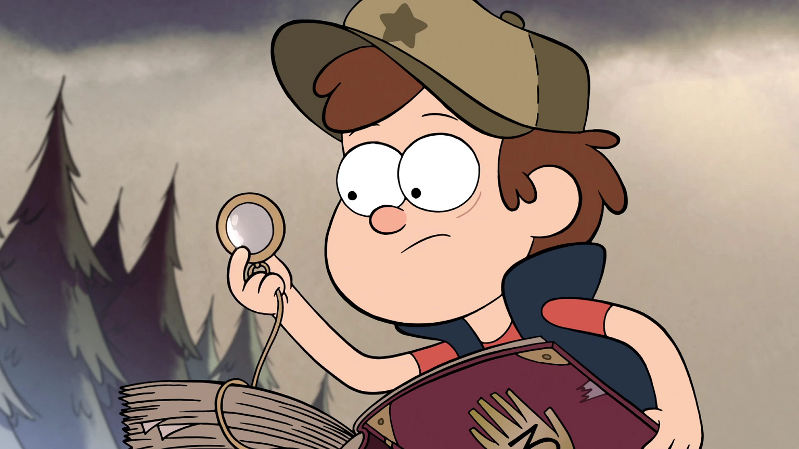

Explore the Wonders of Gravity Falls
Uncover the Secrets of the Mystery Shack
The Mystery Shack is the heart of Gravity Falls and a must-visit destination for anyone intrigued by the town's strange phenomena. Grunkle Stan's eccentric roadside attraction features bizarre and quirky exhibits, from shrunken heads to taxidermied creatures. Despite its seemingly kitschy nature, the Mystery Shack serves as a hub for the twins’ investigations and a gateway to uncovering deeper secrets about Gravity Falls.
The Mystery Shack is more than just a tourist trap; it's a labyrinth of hidden rooms and secret compartments that often play a crucial role in the unfolding mysteries. Fans of the show have enjoyed exploring every nook and cranny, as the Shack is filled with clues and Easter eggs that enhance the viewing experience.
The Supernatural Phenomena
Gravity Falls is a town brimming with supernatural occurrences and cryptic phenomena. The show's creators drew inspiration from a variety of mythologies, legends, and urban legends to craft a rich tapestry of the fantastical. Some highlights include:
- Gnomes: These mischievous creatures live in the forest surrounding Gravity Falls. They often appear in the show as both allies and antagonists, bringing humor and a touch of the absurd to the series
- The Author: An enigmatic figure whose identity and motives are central to the show's overarching plot. His mysterious journal serves as a key to unlocking many of the town’s secrets.
- The Pines Family Journal: This ancient book, discovered by Dipper, contains detailed notes and illustrations about the strange creatures and events in Gravity Falls. It’s a vital tool for Dipper and Mabel as they navigate the town's mysteries.
- The Blind Eye Society: A shadowy group that seeks to conceal the town's supernatural occurrences from the public. Their motives and activities play a significant role in the series' narrative.
The community
The Gravity Falls fan community is a vibrant and passionate group dedicated to celebrating and exploring every aspect of the show. Fans have created an array of content, including fan fiction, art, and theories about the show's deeper mysteries. The show’s creators, including Alex Hirsch, have actively engaged with fans, adding to the sense of community and shared discovery.
- Fan Art: Talented artists from around the world have contributed stunning visual interpretations of characters and scenes from the show. Many fan art pieces highlight the series' unique style and rich character designs.
- Theories and Speculations: The show's intricate plot and hidden clues have inspired numerous fan theories and speculations. Enthusiasts enjoy dissecting episodes, analyzing symbols, and proposing their interpretations of the show's deeper meanings.
- Conventions and Events: Gravity Falls has inspired fan conventions and special events where fans gather to celebrate their love for the show. These gatherings often feature panel discussions, cosplay, and opportunities to meet others who share a passion for Gravity Falls.